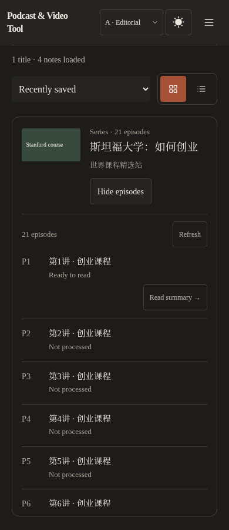
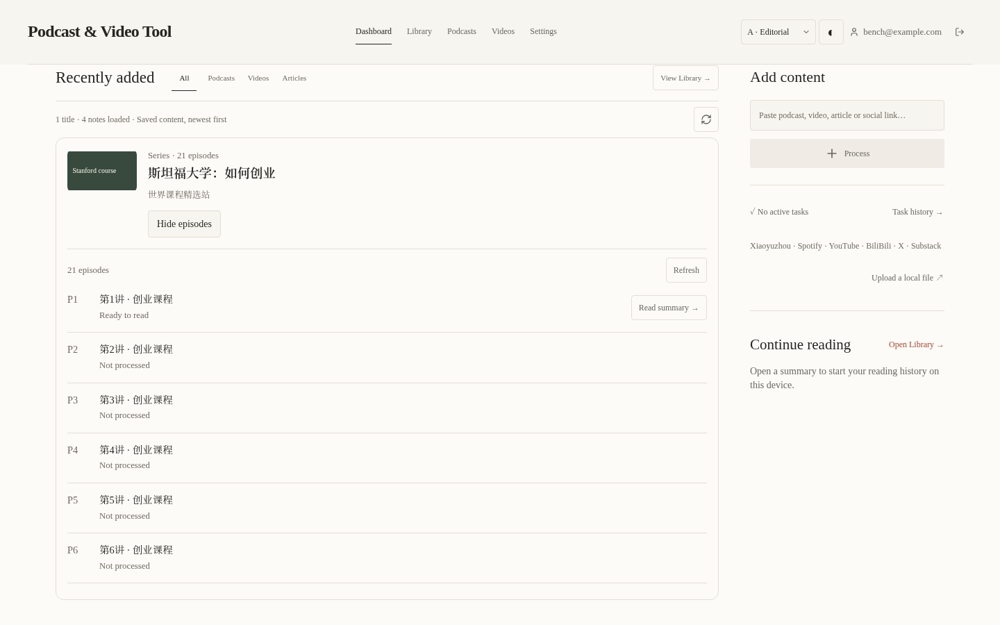
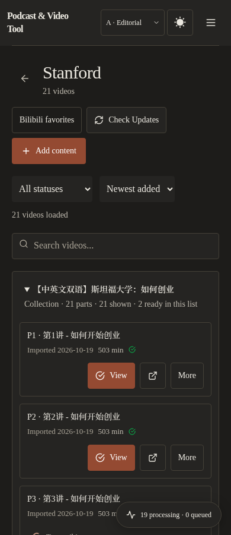

首页最近添加、Library 和频道把同一 Bilibili 原视频的 P 归为一组，按数字顺序选集。按原视频 URL 的 BV/av 标识分组，不按相似标题合并。单个已加载 P 只要携带多 P 信息也显示系列；后续页合并进同一组。
首页和 Library 选集按需读取现有 authenticated collection endpoint，可以发现当前分页之外的 P。每集仍有独立状态和摘要入口；无写入、重处理或删除。读取失败保留已加载集并提供刷新。阅读页保留默认展开的 collection details，新增已有 PR #210 的上一集/下一集导航。
API 对当前页 Bilibili 项目批量读取 id,url，并限制 user_id；不返回全文、不改变 schema。分页仍按已保存笔记进行，显示标题数与笔记数；展开列表显示全集，未处理集明确标注。
验证：517 项前端测试通过，最终受影响的29项重跑通过；22项 Library 后端测试通过；生产构建197.6 KiB，预算197.75 KiB。首页/Library浏览器：Classic/Editorial × 浅/深色 ×390/820/1440；频道和多P阅读：四种外观×320/390/820。验证跨页去重、P1-P21顺序、搜索、键盘展开、错误恢复和页面边界。
以下为本地 Chromium、可控数据的新截图；封面为测试图，不是生产内容。当前环境无法直接访问线上站点，不声称完成线上视觉验收。整合 #210 的提交祖先，避免与正在进行的 #215 重复实现；没有合并 #215 的其他业务改动。


